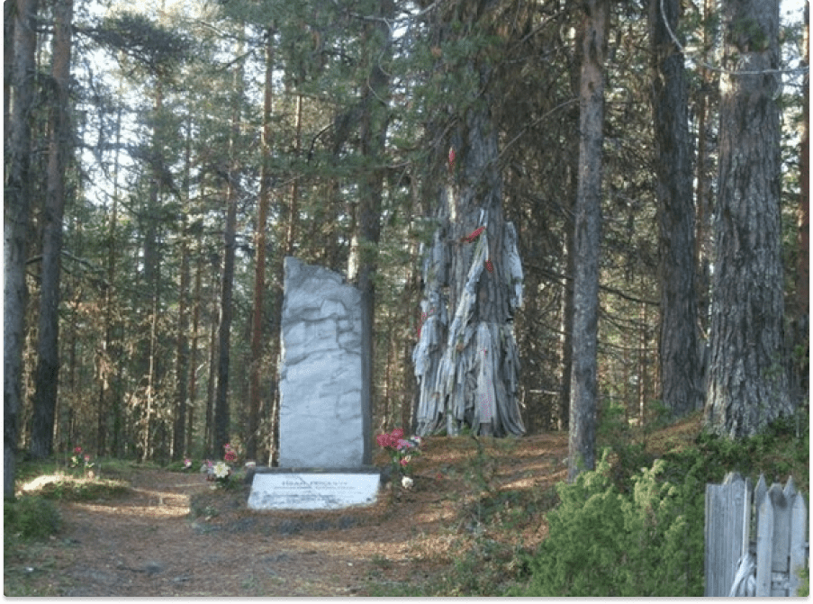

Более десятка народных сказаний и преданий посвящены этой легендарной личности, обладавшей могучей силой и сверхъестественными способностями, подобно эпическим героям Эпоса «Калевалы».
Умение искусно владеть магией слова и знать суть вещей является отличительной чертой карельских воинов-жрецов, память о которых бережно хранится в народной устной традиции.
Род Роккачу издавна проживал в исторической области Лопские погосты (Муезерский район Карелии), населенной карелами и саамами. Согласно народным легендам и сказаниям, Иван Роккачу с детства обладал недюжей силой, умом и храбростью.

Завоевательные походы шведов на восточные карельские земли вызвали у финно-угорских этносов партизанское сопротивление, которое возглавили храбрые воины, одним из которых стал Иван Роккачу. Под его предводительством в карельских лесах (в районе поселения Тикша) действовал большой лесной отряд, который устраивал многочисленные засады и вылазки против шведов.
В постоянных вооруженных противостояниях зародилось карельское воинское братство, что было одним из первых примеров организованного сопротивления финно-угров против внешней экспансии.
Также объемным по содержанию циклом легенд и преданий о Роккачу является народная память о его подвигах и деяниях во благо людей. Он много раз спасал жителей селений от различных стихий и диких животных.
По одной из легенд, он владел тайной магического слова и избавил селян от нашествия змей, которые слушались его как «слепые котята». Произнесенные им заклинания позволили спасти поселение от змей, заставить их поплыть за ним на безлюдный остров, где он их оставил, а сам уплыл обратно домой.
Роккачу прожил долгую героическую жизнь и был предан земле в родовом селении Тикша. Здесь до сих пор сохранилась могила народного героя, которая является святым местом для финно-угорской истории.